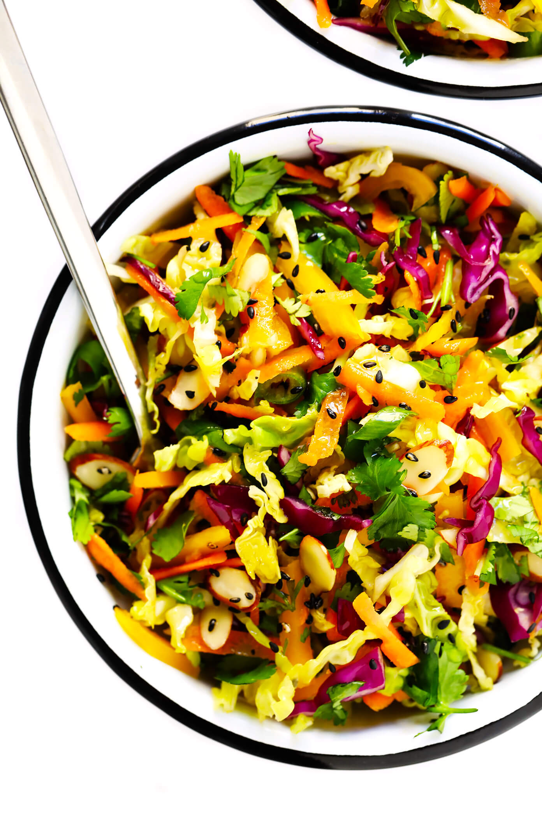

Sesame Asian Slaw
Ingredients
- pre-shredded green or red cabbage, or a mix
- shredded carrots
- chopped yellow bell pepper
- sliced almonds (freshly toasted in a pan preferrably)
- black or white sesame seeds for sprinkeling
- optional: chopped avocado
- optional: other chopped crunchy veggies
- optional: a handful of chopped cilantro and/or mint
- optional: thinly-sliced red onions
- Sesame vinaigrette:
- Oil (Sunflower e.g.)
- Soy sauce
- Rice Vinegar
- maple syrup or honey
- toasted sesame oil
- ground ginger
- finely chopped garlic
- Salt & Pepper
Preparation
- Make the dressing by whisking all ingredients together in a small bowl or put in a screw-top container and shake it until ready to go
- Mix the salad ingredients in a big bowl
- Drizzle your dressing on top and toss until combined
- Eat while fresh and crunchy!